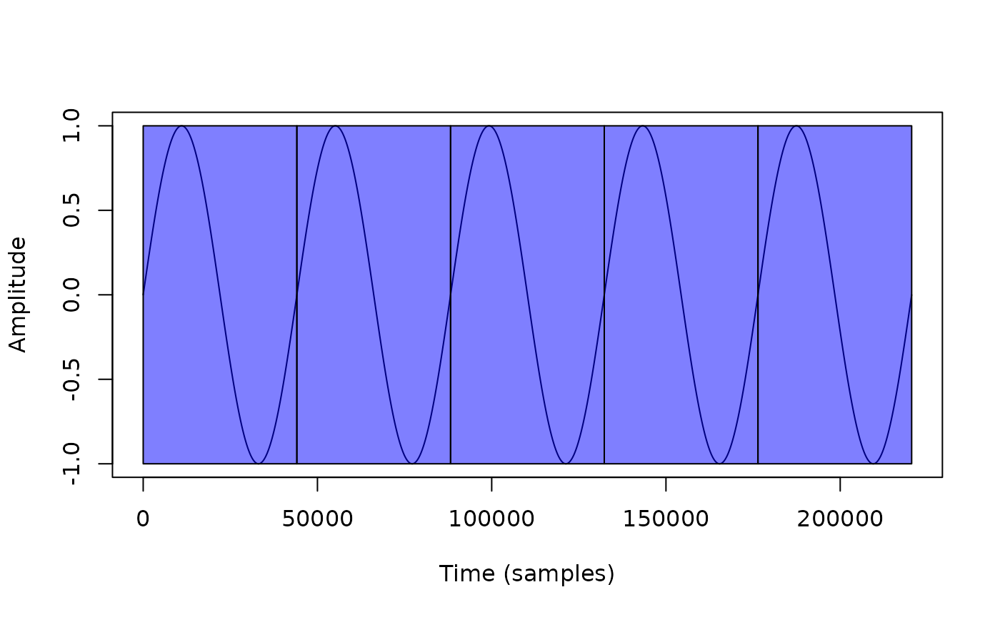
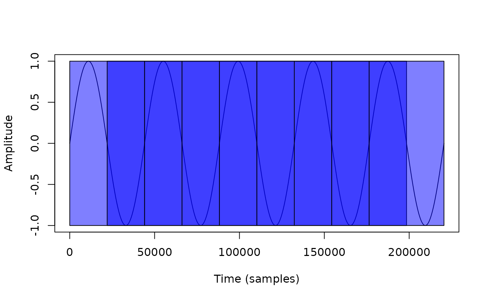
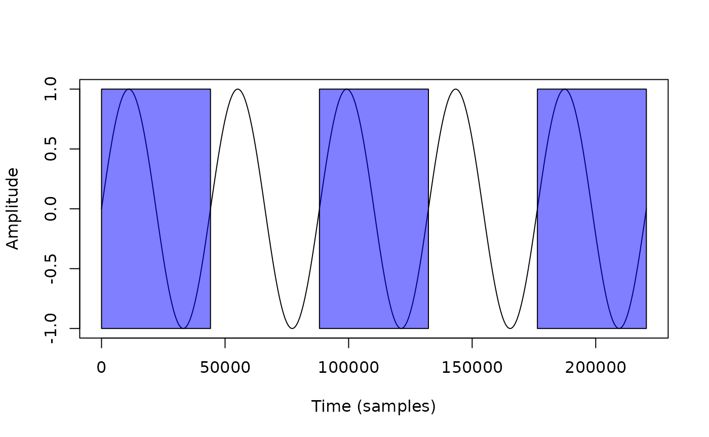

Managing audio in R with SonicScrewdriveR
Reading audio files
Several functions are available to read audio files into R, including
the readWave() and readMP3() functions from
the tuneR package, as well as tools from the package
av. SonicScrewdriveR simplifies reading audio files by
providing a single wrapper for these functions,
readAudio(), which can read audio files in a variety of
formats, including WAV, MP3, and FLAC.
filename <- system.file("extdata", "AUDIOMOTH.WAV", package="sonicscrewdriver")
w <- readAudio(filename)Performing analyses on channels
Some existing functions only operate on a single channel at a time.
This may cause unnecessarily complex workflows when bulk analysing files
with different numbers of channels. The allChannels()
function applies a function to each channel and returns a list of
analyses. This technique allows for the same analysis to be performed on
each channel, without reference to the number of channels in the audio
file. Optionally, a cluster can be specified to process channels on
separate processor cores to increase analysis speed.
Windowing
It is often desirable to process a long audio file in chunks. The
windowing() function can be used to split an audio file
into overlapping or non-overlapping windows. This function may be
particularly useful for processing long Wave files in a memory-efficient
manner. Optionally, a cluster can be specified to process windows on
separate processor cores to increase processing speed.
In order to demonstrate windowing() we first define a
simple function that draws a rectangle around the windowed region of a
sound file.
drawWindow <- function( wave, start, window.length) {
rect(start, -1, start+window.length, 1, col= rgb(0,0,1.0,alpha=0.5))
}We can then show the windows generated if the
window.length is 44100 samples, and the
window.overlap is 0.
# Create a 5 second sine wave of 1Hz
w <- tuneR::sine(1, duration=5*44100)
plot(w@left, type="l", xlab="Time (samples)", ylab="Amplitude")
windowing(w, window.length=44100, window.overlap = 0, FUN=drawWindow)
The entire audio file is analysed in chunks of 44100 samples, with no
overlap between windows. The drawWindow() function is
applied to each window, and the result is plotted on top of the
oscillogram of the original audio file.
The window.overlap parameter can be adjusted so that the
windows overlap by a certain number of samples.
plot(w@left, type="l", xlab="Time (samples)", ylab="Amplitude")
windowing(w, window.length=44100, window.overlap = 44100/2, FUN=drawWindow)
Alternatively, a negative value of window.overlap can be
used to take regularly-spaced samples from the audio file.
plot(w@left, type="l", xlab="Time (samples)", ylab="Amplitude")
windowing(w, window.length=44100, window.overlap = -44100, FUN=drawWindow)
The bind.wave parameter can be used to combine the
results of the windowing function into a single Wave object (if FUN
returns a Wave object).
In the example below we use windowing() to add noise to
sections of a sine wave.
w <- tuneR::sine(1, duration=5*44100)
addNoise <- function(w, start, window.length) {
nw <- tuneR::noise("white", duration=length(w@left), samp.rate=w@samp.rate, pcm=w@pcm, bit=w@bit)
rw <- w + nw/max(nw@left) # Scale noise to the amplitude of the sine wave
return(rw)
}
o <- windowing(w, window.length=44100, window.overlap = -44100, FUN=addNoise, bind.wave=TRUE)
plot(o@left, type="l", xlab="Time (samples)", ylab="Amplitude")TaggedWave workflow
The techniques above can be applied to the generic Wave
and WaveMC objects from the tuneR package.
The TaggedWave class extends the Wave class
from the tuneR package so that it can include extended
metadata and the results of analyses. This allows for the storage of
additional information about the audio file, such as the location and
time of recording, and the results of analyses. The
tagWave() function can be used to tag a Wave
or WaveMC object with additional metadata.
In addition, combined with new classes WaveAugment,
WaveFilter, and WaveAnalyse it is possible to
create a self-documenting pipeline for audio processing and analysis
(that is also compatible with the R pipe).